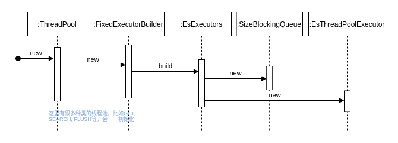

Ch09-Elasticsearch 之 threadpool
August 30, 2021
Elasticsearch 之线程池。
1. 实现原理 #
线程池的实现还是比较简单的，本质上都是对 Java 各种线程池的再封装，然后再将这些封装后的线程池放入到一个 Map 中维护起来。如果有任务需要的话，那么再从 Map 中取出/创建指定类型的线程池便可。线程池的初始化是在 Node 刚刚启动的时候，就完成的。在 org.elasticsearch.threadpool.ThreadPool 中有个变量 private final Map<String, ExecutorHolder> executors，而 executors 的构建方式如下所示。
public class ThreadPool implements ReportingService<ThreadPoolInfo>, Scheduler {
private final Map<String, ExecutorHolder> executors;
private final Map<String, ExecutorBuilder> builders;
public ThreadPool(final Settings settings, final ExecutorBuilder<?>... customBuilders) {
final Map<String, ExecutorBuilder> builders = new HashMap<>();
builders.put(Names.GET, new FixedExecutorBuilder(settings, Names.GET, allocatedProcessors, 1000));
builders.put(Names.FLUSH, new ScalingExecutorBuilder(Names.FLUSH, 1, halfProcMaxAt5, TimeValue.timeValueMinutes(5)));
...
this.builders = Collections.unmodifiableMap(builders);
final Map<String, ExecutorHolder> executors = new HashMap<>();
for (final Map.Entry<String, ExecutorBuilder> entry : builders.entrySet()) {
final ExecutorBuilder.ExecutorSettings executorSettings = entry.getValue().getSettings(settings);
// 这里会将 ExecutorBuilder 通过 build 方法构建为 ExecutorHolder
final ExecutorHolder executorHolder = entry.getValue().build(executorSettings, threadContext);
if (executors.containsKey(executorHolder.info.getName())) {
throw new IllegalStateException("duplicate executors with name [" + executorHolder.info.getName() + "] registered");
}
logger.debug("created thread pool: {}", entry.getValue().formatInfo(executorHolder.info));
executors.put(entry.getKey(), executorHolder);
}
this.executors = unmodifiableMap(executors);
}
}
比如创建一个 fixed 类型的线程池，其流程如下所示。

2. 分类 #
org.elasticsearch.threadpool.ThreadPool
2.1 按照用途 #
| 名称 | 说明 |
|---|---|
| index.merge.policy.floor_segment | 默认 2MB，小于这个大小的 segment，优先被归并。 |
| same | 在调用者线程执行，不转移到新的线程池。 |
| generic | 用于通用的操作 (例如，节点发现)，线程池类型为 scaling。 |
| listener | 主要用于 Java 客户端线程监听器被设置为 true 时执行动作。线程池类型为 scaling，最大线程数为 min(10, (处理器数量)/2)。 |
| get | 用于 get 操作。线程池类型为 fixed, 大小为处理器的数量，队列大小为 1000。 |
| analyze | |
| write | |
| search | 用于count/search/suggest操作。线程池类型为fixed, 大小为 int((处理器数量 3)/2)+1，队列大小为 1000。 |
| snapshot_throttled | |
| management | 管理工作的线程池，例如，Node info、Node tats、List tasks 等。 |
| flush | 用于索引数据的 flush 操作。 |
| refresh | 用于 refresh 操作。线程池类型为 scaling, 线程空闲保持存活时间为 5min，最大线程数为 min(10, (处理器数量)/2)。 |
| warme | 用于 segment warm-up 操作。线程池类型为 scaling，线程保持存活时间为 5min，最大线程数为 min(5, (处理器数量)/2)。 |
| snapshot | 用于 snaphostrestore 操作。线程池类型为 scaling，线程保持存活时间为 5min，最大线程数为 min(5, (处理器数量)/2)。 |
| force_merge | 顾名思义，用于 Lucene 分段的 force merge。 |
| fetch_shard_started | 用于 TransportNodesAction. |
| fetch_shard_store | 用于 TransportNodesListShardStoreMetaData。 |
| system_read | |
| system_write |
2.2 按照种类来分 #
| 名称 | 说明 |
|---|---|
| direct | 对用户并不可见，当某个任务不需要在独立的线程执行，又想被线程池管理时，于是诞生了这种特殊类型的线程池：在调用者线程中执行任务 |
| fixed | 拥有固定数量的线程来处理请求，当线程空闲时不会销毁，当所有线程都繁忙时，请求被添加到队列中 |
| fixed_auto_queue_size | fixed 类型的线程池相似，该线程池的线程数量为固定值，但是队列类型不一样。其队列大小根据利特尔法则 ( Little’s Law) 自动调整大小。 |
| scaling | 线程数量是动态的，介于 core 和 max 参数之间变化。线程池的最小线程数为配置的 core 大小，随着请求的增加，当 core 数量的线程全都繁忙时，线程数逐渐增大到 max 数量。max 是线程池可拥有的线程数。上限。当线程空闲时，线程数从 max 大小逐渐降低到 core 大小。 |